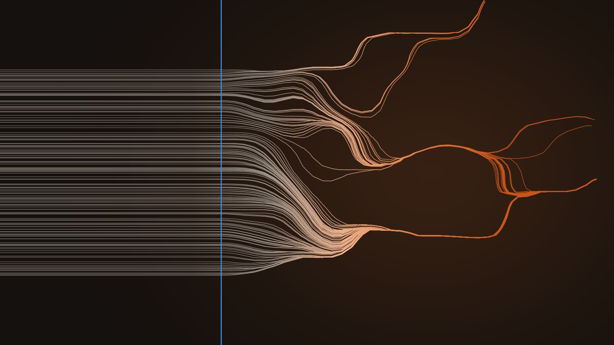
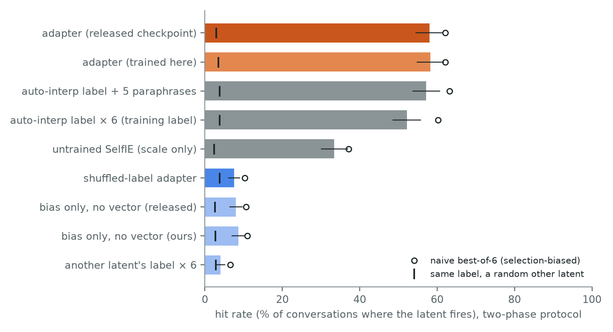
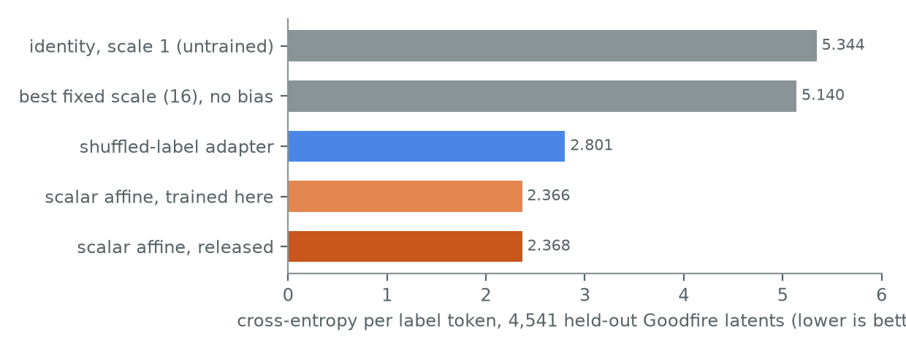

← Research·Experiments·
A model’s descriptions of its own features beat the labels it learned from, by about as much as paraphrasing them does
Replicates “Learning Self-Interpretation from Interpretability Artifacts”, the AI Alignment Foundation’s adapter self-interpretation result, on its own model, SAE, code and scoring. The headline reproduces: a 4,097-parameter adapter lets Llama-3.1-8B describe SAE features better than the labels it was trained on. For anyone reading that as “the model knows itself better than its labellers”: five paraphrases of the same labels score as well.

experiments/shared/make_art.py.Summary: the short answer and the key results
In short
Can a frozen language model, given one of its own SAE feature directions through a tiny trained adapter, describe that feature better than the labels the adapter was trained on? Yes, as the paper reports. On 500 held-out Goodfire latents, the released adapter’s descriptions made the feature fire in 58.0% of the conversations they inspired, against 52.2% for the auto-interp labels it learned from (paired difference +5.8 points [2.5, 9.2]; the paper: 59.2% against 50.8%). It reads the vector: an adapter trained on shuffled labels scores 7.5%, the learned bias alone 8%. But the gain over the training labels is no bigger than what five paraphrases of those labels buy (57.2%), so it says more about trying six varied descriptions than about self-knowledge. And the labels were written by an automated pipeline, not by humans.
Key results
- The headline reproduces. Released adapter 58.0% [54.5, 61.5] against the training labels 52.2% [48.5, 55.8], +5.8 [2.5, 9.2] paired, under the paper’s two-phase protocol (pick the best of six candidates on ten conversations, report it on ten fresh ones). An adapter trained here with the released recipe lands on the same numbers: validation loss 2.366 against 2.368, hit rate 58.3%.
- Paraphrases do as well. The training label plus five paraphrases written by the same Llama scores 57.2% [53.7, 60.8], level with the adapter (+0.8 [−2.5, 4.2]) and +5.0 [3.5, 6.6] above the label repeated six times. The paper’s paraphrases, written by another model, scored 3.1 points below its adapter.
- The adapter reads the vector. An adapter trained on shuffled vector-label pairs scores 7.5% [6.0, 9.1], the same as the adapter’s bias with no vector (8.0%) and near another latent’s label (4.0%). The trained adapter is 50.7 points [47.1, 54.4] above its shuffled twin, and untrained SelfIE scores 33.4% (the paper: 36.4%).
- The bias carries most of the loss gain. Validation loss falls from 5.34 (identity) to 5.14 with the best fixed scale and to 2.37 with the learned bias: 93% of the gain is the bias (the paper: 85%).
- The protocol decides the size of the win. Scored the naive way (the best of six candidates on the same ten conversations), the training label repeated six times jumps from 52.2% to 60.3%, because picking the luckiest of six noisy draws inflates it, and the adapter’s edge shrinks from 5.8 to 1.8 points.
- Hits are specific. The same conversations fire a random other latent 2.4-3.9% of the time for every arm, and the chat template alone fires 1% of latents, so the hit rates measure the target feature.
01Introduction
Take feature 33911 of Goodfire’s sparse autoencoder on Llama-3.1-8B. Its auto-interp label reads “Modal verbs expressing technological capabilities and consequences”. Ask Llama to write short conversations that exhibit that label and the feature fires in 2 of 10. Now feed the feature’s own direction back into Llama, through a 4,097-number adapter, at the blank in “What is the meaning of “_”?”. It answers “this can”. Conversations built from that answer fire the feature in 10 of 10.
What is known. SelfIE (self-interpretation of embeddings) injects an activation vector into a prompt that asks the model what it means, and lets the model describe it. Used untrained, it is unreliable: the right injection scale differs for every vector. Learning Self-Interpretation from Interpretability Artifacts trains a small adapter that maps the vector before injection, on pairs of SAE feature directions and their labels, with the model frozen. Its scalar-affine adapter, f(h) = α·h + b, has one number more than the model’s width. The paper reports that the adapter’s descriptions beat the labels it was trained on under generation scoring, and the AI Alignment Foundation’s page summarises this as self-descriptions “more accurate than the human-generated labels they were trained on”.
What is missing. Three readings of that result predict the same headline. The model reads the feature from its own activations better than the labeller did. Or the adapter supplies six varied candidates where the baseline repeats one, and the scorer rewards variety. Or the learned bias writes generic descriptions that happen to fire frequent features. The paper’s paraphrase baseline speaks to the second; it has no control for the third.
What this note does. It reruns the paper’s Goodfire cell (Table 2) with the paper’s model, SAE, labels, prompts and protocol, and its released adapter.
- A replication of the headline on 500 held-out latents, with the released adapter and one retrained from its recipe.
- Four controls the paper did not run: a shuffled-label adapter, the bias alone, another latent’s label, and the chat template alone.
- A specificity check: every conversation is also scored on a random other latent.
- A protocol check: the same data scored the naive way, to show how much the two-phase protocol matters.
Before any run, these were fixed as success tests (predictions, scored below): (1) the adapter’s labels beat the training labels with a paired 95% interval above zero; (2) they beat untrained SelfIE by more than 10 points; (3) an adapter trained on shuffled labels does not come close (more than 10 points below). The replication counts as reproduced if (1) and (2) hold.
02Setup
| Model and SAE | Llama-3.1-8B-Instruct, bf16, frozen. Goodfire’s SAE on the output of block 19 (65,536 latents), loaded as SAELens loads it. The repo’s 45,418 auto-interp labels with its own split: 40,877 train, 4,541 validation. |
|---|---|
| Adapter | Scalar affine, f(h) = α·h + b on the unit-normalised decoder direction, injected as the token embedding at both placeholders of “What is the meaning of “X”?” / “The meaning of “X” is “”. Trained on the label tokens with the released checkpoint’s recipe: AdamW (0.02, scale 0.05), batch 256, 5 epochs, 800 steps. |
| Labels | For each latent, 6 candidates per arm. Adapters: injection scales 0.5-5.5; untrained SelfIE: 0.5-16 (the repo’s grids); temperature 0.7, top-p 0.9, 30 tokens. Baselines: the training label ×6; the label + 5 paraphrases by Llama-3.1-8B-Instruct. |
| Generation scoring | The paper’s prompt asks Llama to “Produce a VERY SHORT conversation which exhibits ‘[label]’”; 20 conversations per candidate (temperature 0.7, top-p 0.9, 100 tokens, vLLM), converted to the chat template; a hit is a conversation in which the latent fires on any token after the first. |
| Two-phase protocol | The paper’s: choose the candidate with the most hits in conversations 1-10; report its hit rate on conversations 11-20. Naive: the best candidate’s rate on conversations 1-10. Coverage: any hit among the first ten for any candidate. |
| Controls | Shuffled: the same recipe on vector-label pairs with labels permuted. Bias only: an adapter given a zero vector (the same 6 labels for every latent). Wrong label: another latent’s auto-interp label ×6. Template floor: one neutral two-turn chat. Decoy: each conversation also scored on a random other latent. |
| Scaled down | 500 held-out latents (a seeded sample of the validation split) instead of all 4,541; conversations generated with vLLM; paraphrases by Llama itself (the paper does not name its paraphraser). No detection-scoring column, no Llama Scope, Wikipedia or 70B cells. |
Words used here. A latent (or feature) is one SAE unit. Its hit rate is the share of conversations, written from a label, in which it fires. Specific hit rate is the hit rate minus the decoy rate on the same conversations.
The rulers were checked first. The SAE reconstructs Llama’s block-19 output poorly on short chats (fraction of variance unexplained 0.66, 27 active latents per token against Goodfire’s reported 91), so its pre-registered bar failed. Our loader matches SAELens’ exactly, and block 19 fits better than blocks 17-21, so this is the SAE’s fit, not a loading error (amendment 1). The scorer passed its own check: on the first 50 latents the right label beats another latent’s label by 54 points (bar 10), and the template alone fires 1% of latents.
03How the study was run
- Plan: committed before any run, with five predictions and a $25 cap in code.
- SAE check: 10 fixed chats; a layer scan over blocks 17-21 when it failed.
- Training: our adapter and its shuffled-label twin, 800 steps each (14 minutes on one H100).
- Validation loss: 4,541 latents for identity at 7 scales and 3 adapters.
- Smoke run: 20 other latents through the whole pipeline (not reported).
- Main run: 500 latents × 9 arms × 6 candidates, 21,012 labels, 420,241 conversations, each scored on its target and a decoy.
- Analysis: 95% bootstrap intervals over latents (10,000 resamples), paired for differences.
| Fixed before any run | Changed after reading results |
|---|---|
| Model, SAE, labels and split, recipe, scale grids, prompts, sampling, the two-phase protocol, the 500 latents (seed 0), every arm and control, the five predictions | The SAE’s reconstruction bar failed; we proceeded after checking the loader and layer (amendment 1). The naive best-of-6 comparison was planned as a side measure; it became a key result only after reading it. |
| Budget: $25 | Spent: $6.21 of H100 time (from wall time at $3.95/h). |
Conditions: Transformers 4.55 and vLLM 0.10.1 on one H100 (Modal), one job at a time. Labels for 500 latents take a minute; 420,000 conversations take 29 minutes to write and 12 to score.
04Results
4.1 The adapter’s labels beat its training labels, as reported

| Goodfire latents, Llama-3.1-8B | The paper (Table 2) | Ours, 500 latents |
|---|---|---|
| Adapter (scalar affine, trained on Goodfire) | 59.2 ± 0.6 | 58.0 [54.5, 61.5] released; 58.3 [54.8, 61.8] ours |
| Original label + 5 paraphrases | 56.1 ± 0.6 | 57.2 [53.7, 60.8] |
| Auto-interp label × 6 | 50.8 ± 0.6 | 52.2 [48.5, 55.8] |
| Untrained SelfIE | 36.4 ± 0.6 | 33.4 [30.0, 37.0] |
| Coverage, adapter / label × 6 | 87.7 / 87.2 | 88.6 / 87.4 |
Table 1. Hit rates in %, two-phase protocol. The paper’s intervals are ±1 standard error over all 4,541 validation latents; ours are 95% bootstrap intervals over 500.
Every cell lands within 3 points of the paper’s, and the ordering is the same. The adapter beats the training labels by 5.8 points [2.5, 9.2], paired by latent, against the paper’s 8.4. Latent by latent, the adapter’s label scored higher on 183, lower on 146 and tied on 171 (44 of them at zero for both). The adapter trained here from the released recipe is indistinguishable from the released one (+0.2 [−2.2, 2.7]).
4.2 Five paraphrases of the training label do as well as the adapter
The label plus five paraphrases scores 57.2%, 0.8 points [−2.5, 4.2] below the adapter, and 5.0 points [3.5, 6.6] above the same label repeated six times. Nearly all of the adapter’s edge over its training labels is the gain from having six different descriptions to choose from. The paper’s paraphrase baseline sat 3.1 points below its adapter, with paraphrases written by another model; ours were written by Llama itself, the model that also writes the scoring conversations, which may suit it better. Either way the gap is small next to the gap to untrained SelfIE (24.6 points).
The adapter is also less sensitive to scale, as the paper’s Figure 4 shows: per latent, 3.2 of its 6 scales produced at least one hit, against 1.9 for untrained SelfIE.
4.3 The adapter reads the vector: shuffled labels and the bias alone fall to 8%
An adapter trained on the same pairs with the labels shuffled learns to shrink the vector (its scale fell from 5 to 0.28) and writes generic descriptions; it scores 7.5% [6.0, 9.1]. The released adapter’s bias on a zero vector writes six fixed labels (“The assistant is providing a list of options”, “Syntax and formatting of programming language code blocks”, …), which score 8.0% on these latents. The adapter trained on the real pairs scores 50.7 points [47.1, 54.4] above its shuffled twin. So the bias sets the style, and the vector supplies what the label is about, as the paper argues.

The shuffled adapter’s validation loss (2.80) is far closer to the trained one (2.37) than to identity (5.34). Most of the loss gain is formatting: learning to write a label-shaped description. That is why the paper’s loss table and its hit rates tell different stories, and why the hit rate is the measure to trust.
4.4 Scored the naive way, the adapter’s win shrinks from 5.8 to 1.8 points
If the best of six candidates is scored on the same ten conversations that chose it, the training label repeated six times rises from 52.2% to 60.3%: six noisy draws of one label, and the luckiest is reported. The adapter rises less (58.0 to 62.1), because its six candidates differ and the best one is more often really better. The two-phase protocol in the paper’s appendix exists for this reason, and it matters: under naive scoring the headline gap is 1.8 points.
4.5 The hits are specific to the target latent
Every arm’s selected label, scored on a random other latent using the same conversations, fires that latent 2.4-3.9% of the time; the chat template alone fires 1% of these latents. Subtracting the decoy rate leaves every comparison where it was: the adapter beats the training label by 6.8 points [3.4, 10.3] in specific hit rate. Generic descriptions of frequent features are not what drives the result.
05Browse the labels
Sixty of the 500 latents, chosen at random. For each: the training label, the six labels the released adapter wrote at its six scales (the selected one in orange), untrained SelfIE’s six, and Llama’s paraphrases, each with its hit rate on the ten held-out conversations.
Loading the labels…
06Implications for AI safety
A model that can describe its own internal states would let auditors ask instead of guess. This replication supports the narrow version: a frozen model, given its own feature directions through a few thousand trained numbers, writes descriptions that recreate those features, specifically, better than untrained self-reading and as well as the best labels we gave it. It does not show the model knows itself better than an outside labeller does. The comparison that would show that, our paraphrases, ties.
It also says nothing about faithfulness when the truth is costly to the model. These features are benign. In our GRAFT Episode 2, a model asked to flag reward hacks caught 0.34 of its own hacks against 0.995 of another model’s. A self-description channel that works on SAE features is the kind of tool that would need that test next: describe the states the model would rather not report.
Treat adapter self-interpretation as a good automatic labeller, and test it on states the model has a reason to hide before relying on it for audits.
07Predictions
| # | Prediction (written before any run) | Threshold | Result | Hit? |
|---|---|---|---|---|
| Q1 | Our recipe matches the released adapter | val loss within ±0.10 of 2.368 | 2.366 (−0.002) | ✓ |
| Q2 | Adapter labels beat the training labels | paired lower 95% CI > 0 | +5.8 [2.5, 9.2] | ✓ |
| Q3 | Adapter beats untrained SelfIE | lower CI > +10 points | +24.6 [20.9, 28.2] | ✓ |
| Q4 | The vector matters (ours) | ours − shuffled, lower CI > +10 | +50.7 [47.1, 54.4] | ✓ |
| Q5 | The bias carries most of the loss gain | ≥ 0.70 | 0.93 | ✓ |
The paper’s headline is reproduced by the pre-registered rule (Q2 and Q3). The paraphrase tie (4.2) and the protocol effect (4.4) were not predicted.
Post-mortem. What surprised me: how close the paraphrase baseline came, and how much the scoring protocol moves the headline. What I would change: register the paraphrase comparison as a prediction, since it decides what “better than the training labels” means. The lesson for the guide: when a method produces several candidates and a baseline produces one, give the baseline as many varied candidates before crediting the method.
08What this does not show
- One cell of the paper. Goodfire’s SAE on Llama-3.1-8B, the scalar-affine adapter, generation scoring. Not the Llama Scope or Wikipedia cells, detection scoring, the 70B model, scaling, or the multi-hop bridge-entity result.
- 500 latents, not 4,541. Our intervals are about three times wider than the paper’s.
- Our paraphrases were written by Llama, the model that also writes and is scored on the conversations; the paper’s were written by another model and scored lower. Which paraphraser is fairer is open.
- The SAE reconstructs poorly on short chats (FVU 0.66). Generation scoring uses only which latents fire, as in the paper, but a better SAE could change which labels win.
- “Human labels.” The training labels came from an automated interpretability pipeline, not from people.
09Reproduce it
experiments/repl-adapter-self-interp/reproduce.sh --dry-run # the commands
experiments/repl-adapter-self-interp/reproduce.sh # everything: about 1.5 hours on one H100, about $7
experiments/repl-adapter-self-interp/reproduce.sh --scores # summary and figures from results/Needs Modal (one H100) and a Hugging Face token with access to Llama-3.1-8B-Instruct. Every launch is checked against a $25 cap in code and logged in results/spend.json.
10What’s next
- Self versus other: inject Llama’s feature directions into a second model through a trained adapter and compare it with Llama describing itself, at matched candidates. That is the test of “privileged access”.
- Paraphrases from a third model, and from the adapter’s own labels, to separate candidate variety from content.
- States worth hiding: features of deception or evaluation awareness, with and without a reason for the model to under-describe them.
11Questions and answers
What is SelfIE?
Self-interpretation of embeddings: inject an internal activation into a prompt that asks the model what a placeholder means, and let it answer. The replicated paper trains a small adapter that maps the activation before injection, with the model frozen.
Does the adapter really beat the labels it was trained on?
Yes, on 500 held-out Goodfire latents: 58.0% against 52.2% of conversations make the feature fire (+5.8 points [2.5, 9.2]), close to the paper’s 59.2% against 50.8%. Five paraphrases of the training label score 57.2%, about the same as the adapter.
Were the training labels written by humans?
No. They are auto-interpretability labels from an automated pipeline, released with the paper’s code. The research page’s phrase “human-generated labels” does not match the paper.
Does the adapter use the feature direction or just its learned bias?
The direction. Trained on shuffled labels, or given a zero vector, it scores about 8%, against 58% for the real adapter. The bias carries most of the drop in training loss (93%) by teaching the label format, but the content comes from the vector.
AAppendix: data
- summary_main.json: per arm, the two-phase hit rate, naive best-of-6, coverage, decoy and specific rates with 95% intervals; paired differences; the scorer check; every latent’s numbers.
- scores_main.json: every conversation’s hit on its target and decoy; labels_main.json and para_main.json: every candidate label; latents_main.json: the 500 latents, decoys and wrong-label sources.
- valloss.json, train_ours.json, sae_check.json, sae_layer_scan.json, examples_main.json. Column meanings for every file are in the README. The 420,241 conversations are not published;
reproduce.shregenerates them.
How to cite
@misc{lie2026adapterselfinterpreplication,
author = {Albert Lie},
title = {A model's descriptions of its own features beat the labels it learned from, by about as much as paraphrasing them does},
year = {2026},
month = nov,
url = {https://albertlieyingadrian.github.io/steerlab/experiments/repl-adapter-self-interp/report/}
}